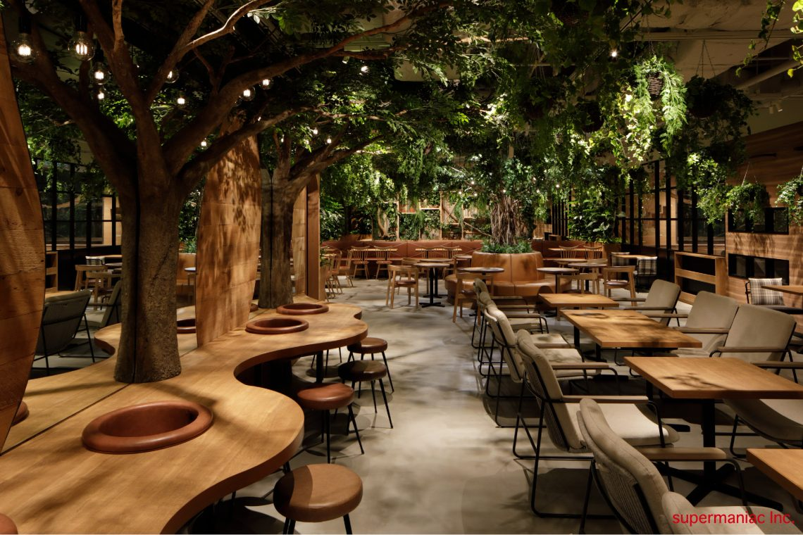

A Peaceful Space
At Komorebi Cafe, we've meticulously designed our space to be a **quiet retreat** from the bustling city. Our interior features natural wood elements and warm, inviting lighting, creating an ambiance where you can unwind and find your moment of calm.
Inspired by the serene beauty of "komorebi" – the Japanese word for sunlight filtering through tree leaves – our cafe embodies tranquility. It's the perfect spot to enjoy a book, catch up with a friend, or simply savor your coffee in peaceful solitude.
Where Coffee Meets Serenity
This title immediately links the tranquil environment with the core offering: coffee. It suggests that the cafe is not just a place to grab a drink, but a dedicated retreat where the act of enjoying coffee is elevated by the calm surroundings. It promises a **holistic experience of peace** intertwined with your brew.

Unwind with Every Coffee Moment
This title focuses on the feeling of relaxation and escape the space provides, directly connecting it to the consumption of coffee. **"Unwind with Every Coffee Moment"** implies that the design and atmosphere of the cafe actively contribute to a sense of calm and stress relief, making each sip of coffee a part of a larger unwinding experience.

Your Quiet Corner for Coffee & Reflection
This title emphasizes the personal and introspective aspect of the cafe's ambiance. It positions the space as a private sanctuary, a **"quiet corner,"** ideal for solitary contemplation or focused work, with coffee serving as a companion for thought and reflection. It appeals to those seeking a personal haven away from the outside world.